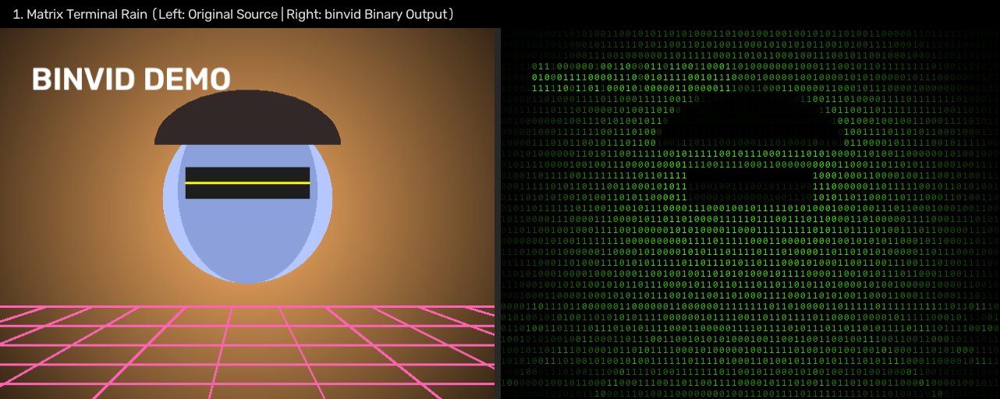

Style 01 · Monochrome
Matrix Terminal Rain
Classic green phosphor CRT terminal with vertical drifting binary rain streams, CRT scanlines, and contrast boost.
binvid input.mp4 --mode mono --digit-mode scroll --scanlines --contrast-boost